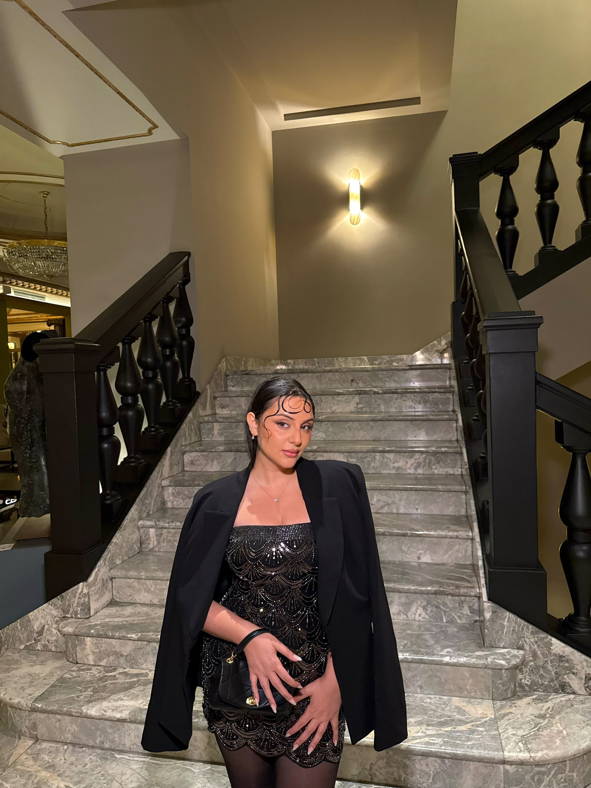
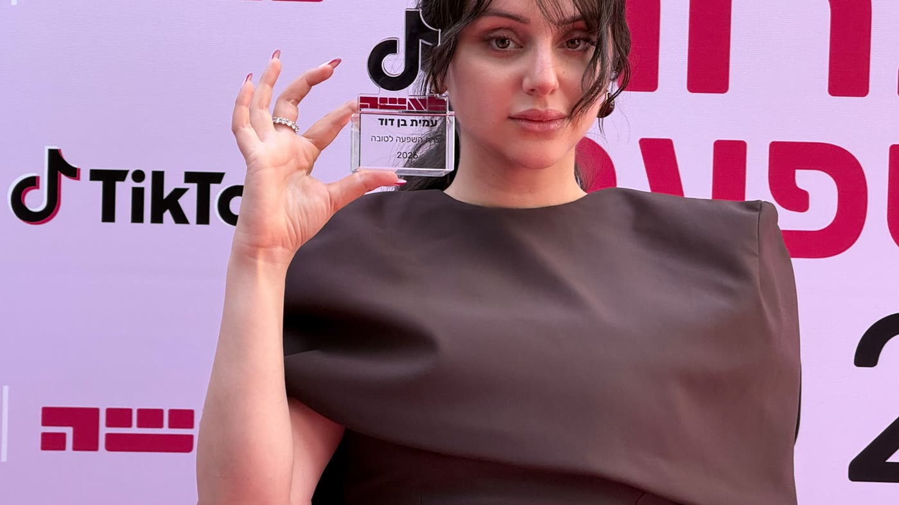
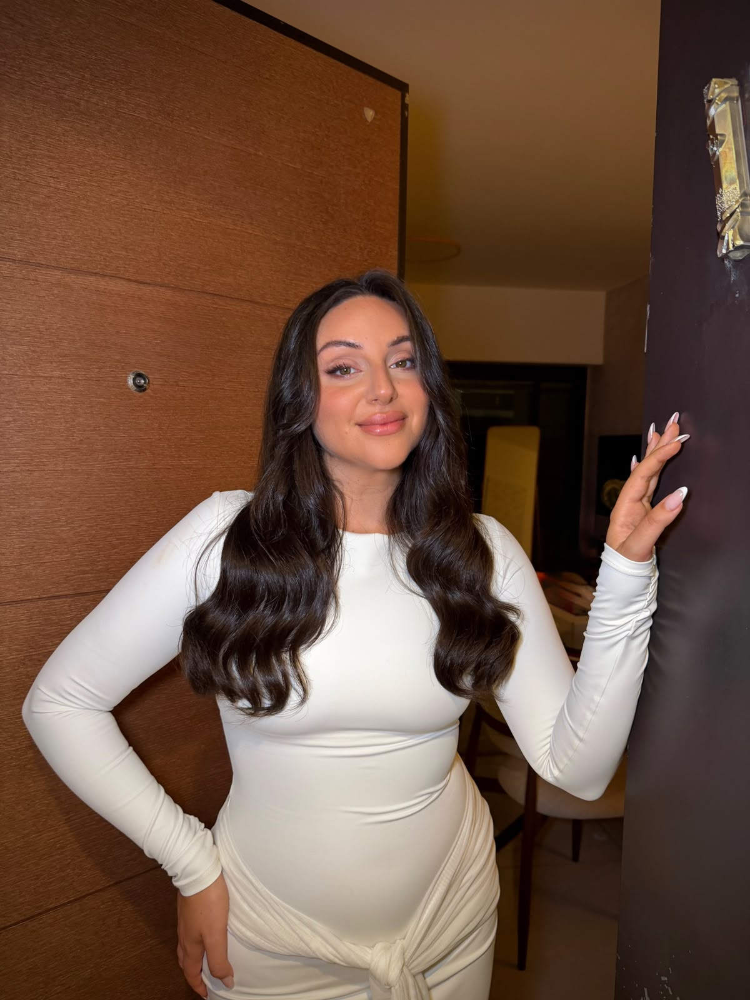
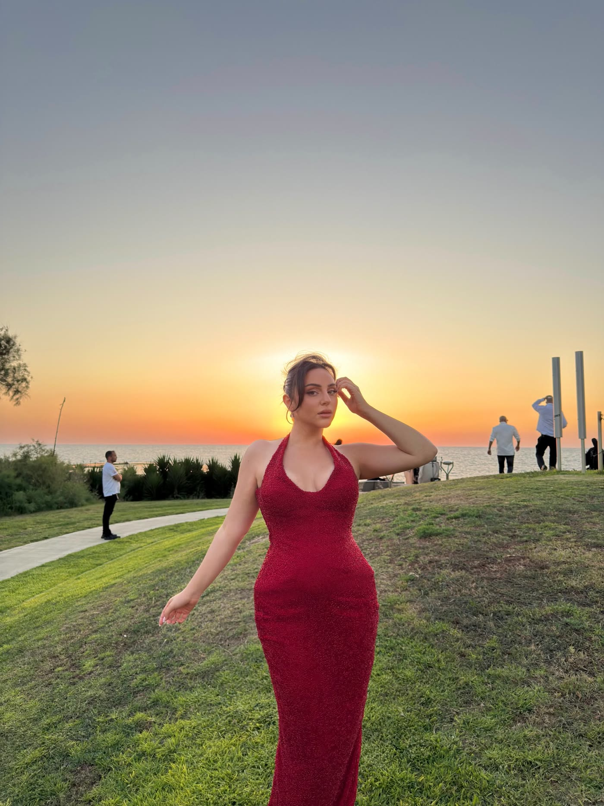
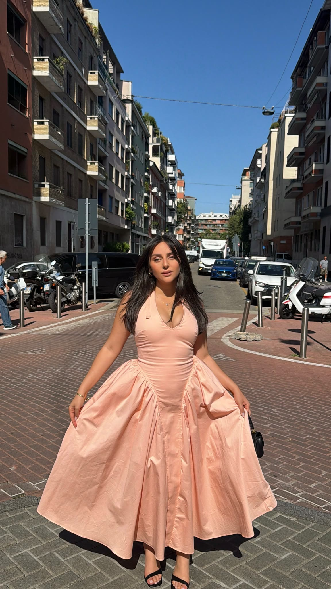
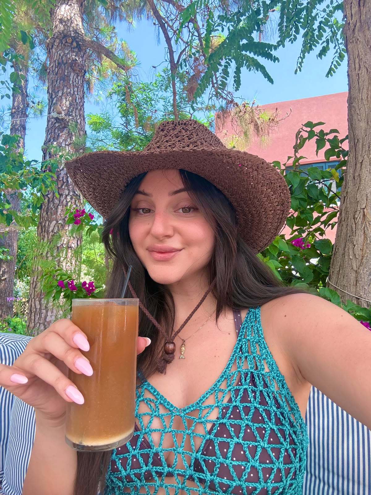
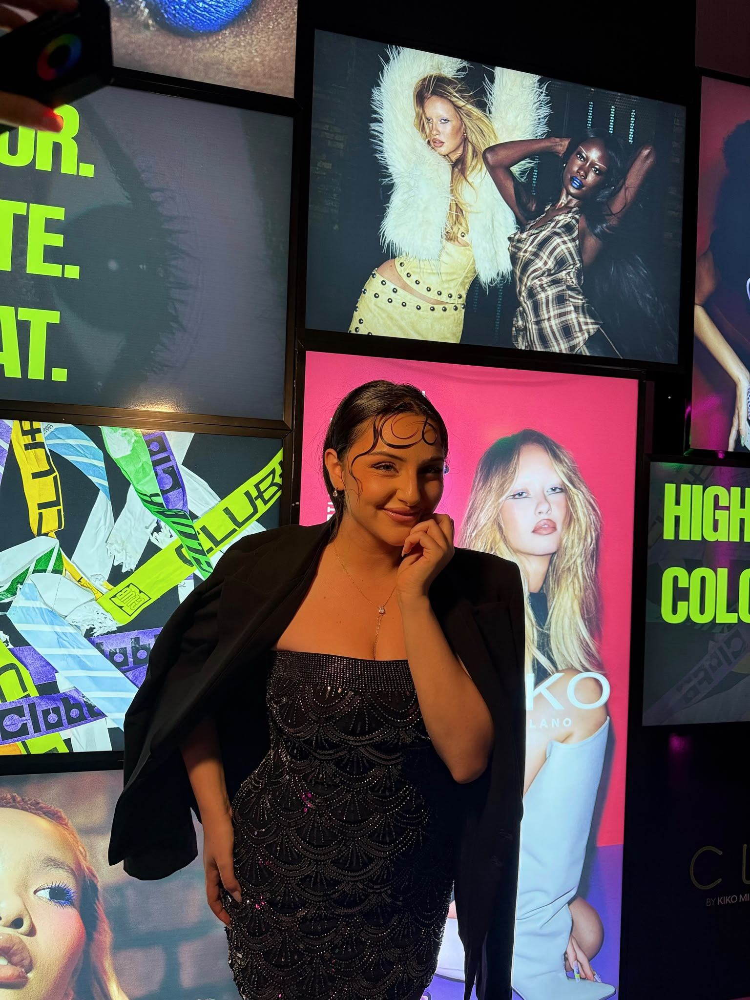
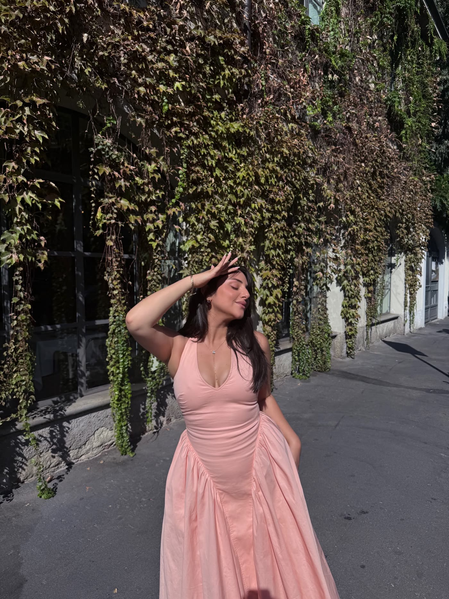
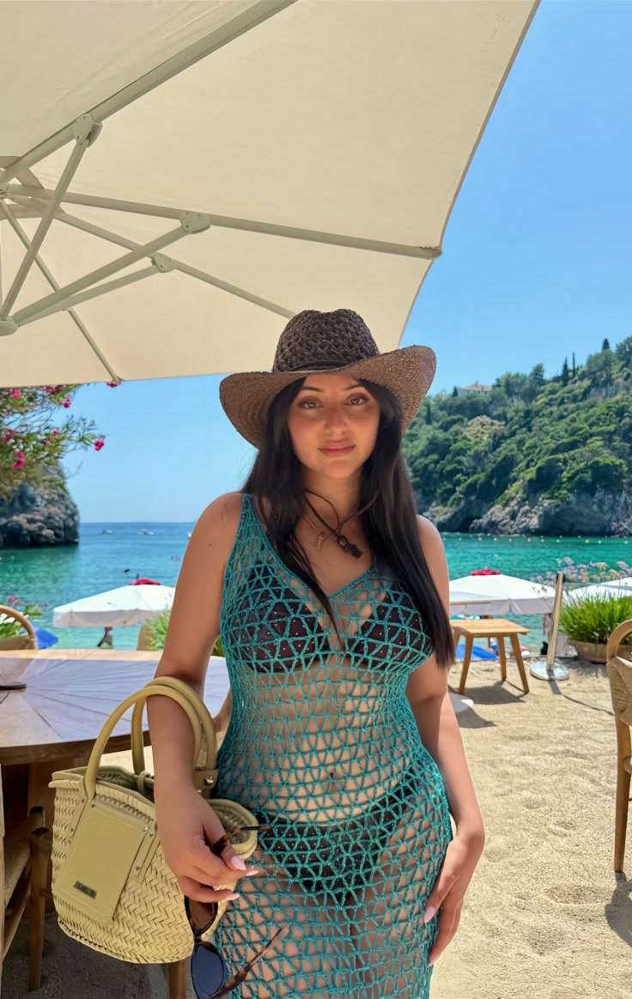

לתת מקום לקול שלך
מה היית רוצה להגיד, לעשות או לנסות — אם היית חוששת קצת פחות ממה יחשבו?
AMIT BEN DAVID PRESENTS
יש בך יותר ממה שאת מרשה לעצמך להראות.
יותר קול. יותר אומץ. יותר מקום להיות מי שאת.
GLOW UP — ההזמנה שלך לבחור בעצמך.
משהו טוב בדרך. כל הפרטים בקרוב.
GLOW UP · עם עמית בן דוד
אולי התרגלת לחכות לרגע הנכון.
להרגיש מוכנה יותר. בטוחה יותר. מספיק טובה.
אבל מה אם הפרק הבא לא מתחיל כשהכול מושלם — אלא כשאת מחליטה שמגיע לך מקום? GLOW UP נולד מתוך הרצון הזה: להפסיק להקטין את עצמך, ולהתחיל לבחור במה שחשוב לך.
זה הזמן שלי — להרשמה ↖
a little more me ♡אני זמרת, יוצרת תוכן וזוכת פרס טיקטוק ו״לאישה״ על יצירת השפעה חיובית. עם קהילה של מעל 450 אלף עוקבים בטיקטוק ו־92 אלף עוקבים באינסטגרם, למדתי איך להפוך את הקול שלי לתוכן שמגיע לאנשים — ולייצר גם הצלחה ברשת.
עוד לפני שהכרת אותי מהמסך, שרתי בבמות פתוחות, הקלטתי שירים וחיפשתי את המקום שלי. בדרך היו גם סירובים, ביקורת ורגעים שבהם לא האמינו בי. אני מכירה את הפחד להיחשף, אבל גם את מה שיכול לקרות כשנותנים לעצמנו הזדמנות.
ובשנה האחרונה עברתי גלואפ מטורף משלי. אחרי שנים של יצירה ושיתוף, גם הסיפור האישי שלי קיבל פרק חדש — ואת הדרך הזאת אני רוצה לשתף איתך.
אני מביאה איתי את הניסיון שצברתי ביצירת תוכן, בהצלחה ברשת ובדרך האישית שלי, כדי שתוכלי לראות גם את האפשרות שלך. כי גם לפרק הבא שלך מגיע מקום.
גם אני רוצה להתחיל — להרשמה ↖
TIKTOK × לאישה · 2026
כשהקול האישי שלך פוגש אמת ורגש, הוא הופך לכוח שמניע קהילה שלמה לבחור בעצמה.
להצטרף למסע — להרשמה ↖03 / EVERY CHAPTER IS PART OF YOU
בשנה האחרונה עברתי גלואפ מטורף. הנה הלפני והאחרי של הדרך האישית שלי — מבפנים ומבחוץ.

גם הפרק שאת נמצאת בו עכשיו יכול להיות התחלה.
לפרק הבא שלי — להרשמה ↖GLOW IN MOTION






04 / THE GLOW UP EXPERIENCE
מפגש סביב הדרך שלך: המקום שאת נמצאת בו, המקום שאת רוצה להגיע אליו, והבחירה להתחיל.
התוכנית המלאה מתגבשת. אלה הנושאים שסביבם נבנה את המפגש.
מה היית רוצה להגיד, לעשות או לנסות — אם היית חוששת קצת פחות ממה יחשבו?
להפנות את המבט פנימה. לברר מה נכון לך, מעבר להשוואות ולציפיות של אחרים.
לא לשנות הכול ביום אחד. לחשוב על הצעד הבא שייתן מקום למה שאת רוצה.
בין שיר חדש לסרטון הבא,
אלה המקומות שבהם תמצאי אותי.
YOUR NEXT CHAPTER STARTS HERE
הפרק הבא שלך מתחיל בהחלטה לתת לעצמך מקום.
ההרשמה תיפתח בקרוב. התאריך, המקום וכל הפרטים יפורסמו כאן.
כל העדכונים אצל @amitmusicofficial
GOOD TO KNOW
פרטי האירוע עדיין בהכנה. ברגע שהתאריך והמקום ייסגרו, נעדכן כאן ובאינסטגרם של עמית.
המכירה עדיין לא נפתחה. כשהכרטיסים יהיו זמינים, יופיע כאן קישור ישיר לעמוד הרכישה.
באינסטגרם ובטיקטוק של עמית. כל הקישורים מחכים לך למעלה, באזור הרשתות החברתיות.